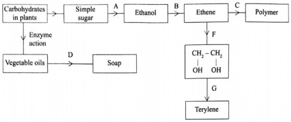
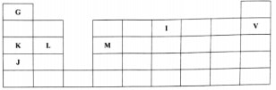
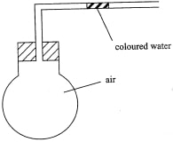
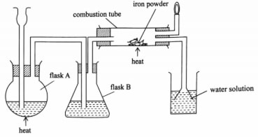
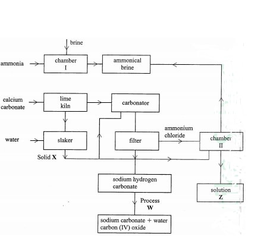
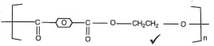

1. The diagram in figure I shows some natural and industrial processes. Study it and answer the questions that follows

(a) Identify the processes labelled: (2 marks)
A...................
B...................
C...................
D...................
(b) State the reagents and conditions required for processes B and D.
(i) Process B:
Reagent................(1 mark)
Conditions ............ (l mark )
(ii) Process D:
(iii) Describe how process D is carried out.(2 marks)
(iv) State two additives used to improve the quality of soap.(1 marks)
(c) State the reagents required in steps F and G.(1 marks)
(iii) Draw the structure of terylene.(1 marks)
(d) (i) Name the polymer formed in step C.(1 marks)
(ii) State one disadvantage of the polymer formed in (d) (i).(1 marks)
2. Figure 2 is a section of the periodic table. Study it and answer the questions that follow. The letters do not represent the actual symbols of elements

(a) (i) Select elements which belong to the same chemical family.(1 marks)
(ii) Write the formulae of ions for elements in the same period.(1 marks)
(b) The hrst ionisation energies of two elements K and M at random are 577 kJ/mol and 494 tel/mol .(1 marks)
(i) Write equations for the 1 ˢ ᵗ ionisation energies for elements K and M and indicate their energies.(1 marks)
(iii) Write the formula of the compound formed when L and I react.(1 marks)
(iv) Give one use of elemcnt V.(1 marks)
(c) (i) State anothcr group that G can be placcd in Figure 1. Explain. (2 marks)
(ii) How do the reactivity of elements J and K compare? Explain. (2 marks)
(d) (i) Elements L and M form chlorides. Complete the following table by writing the formulae of each chloride and state the nature of the solutions. (2 marks)
(ii) The chloride of element M vapourises easily while its oxide has a high melting point. Explain. (2 marks)
3. (a) Complete Table I by indicating the observations, type of permanent or temporary change and name of new compound formed.

(i) State the observation made on the coloured water. Explain.(2 marks)
(ii) Name the gas law illustrated in Figure 3.(1 marks)
(c) Use the standard electrode potentials in Table 2 to answer the questions that follow.
(i) Write the half-cell representation for the element whose electrode potential is for hydrogen. (1 mark)
(ii) Arrange the elements in order of reducing power, starting with the weakest reducing agent. (1 mark)
(iii) I Select two half cells which combine to give a cell with the least e.m.f. (1 mark)
II Calculate the e.m.f of the half cells identified in (iii) I. (1 mark)
4. An experiment was carried out to prepare crystals of magnesium sulphate.
Excess magnesi um powder was added to l00cm'of dilute sulphuric(VI) acid in a beaker and warmed until no further reaction took place.
The mixture was filtered and the filtrate evaporated to saturation, then lcft to cool for crystals to form.
(a) (i) Write an equation for the reaction.(1 mark)
(ii) Explain why eKcess magnesium powder was used.(1 mark)
(iii) State how completion of the reaction was determined.(1 mark)
(iv) What is meant by a saturated solution?(1 mark)
(v) Explain why the filtrate was not evaporated to dryness.(2 mark)
(b) When bleaching powder, CaOC1„ is treated with dilute nitric(V) acid, chlorine gas is released.
This reaction can be used to determine the chlorine content of various samples of bleaching powders and liquids.
(i) Write an equation for the reaction of nitric(V) acid with bleaching powder.(1 mark)
(ii) Calculate the volume of chlorine produced when 10 g of CaOC1, is treated with excess nitric(V) acid. (Ca = 40.0; O = 16.0; Cl = 35.5; 1 mole of gas occupies 22.4dm3 at s.t.p) (3 marks)
(c) Apart from use of chlorine gas in bleaches and water treatment, state two other uses of chlorine gas. (1 mark)
5. (a) The diagram in Figure 4 was used to prepare hydrogen chloride gas which was passed over heated iron powder.

(i) Give a pair of reagents that will produce hydrogen chloride gas in flask A. (2 marks)
(ii) Name the substance in flask B.(1 marks)
(iii) State the observation made in the combustion tube.(1 marks)
(iv) Write an equation for the reaction in the combustion tube.(1 marks)
(v) Describe a chemical test for hydrogen chloride gas.(1 marks)
(b) (i) Identify the gas that bums at the jet.(1 marks)
(ii) Explain why the gas in (b) (i) is burned.(1 marks)
(c) Give reasons why excess hydrogen chloride gas is dissolved using the funnel arrangement. (2 marks)
(d) State what will be observed when the reaction in the combustion tube is complete.(1 marks)
(e) Another experiment was carried out where hydrogen chloride gas was bubbled through methylbeiizene and water in separate beakers.
The resulting solutions were tested with blue litmus papers and marble chips.
(i) Write the observations made in the following table.
6. (a) In Kenya, sodium carbonate is extracted from trona at Lake Magadi. (i) Give the formula of trona.
(ii) Name the process of extracting sodium carbonate from trona.(2 marks)
(b) The flow chart in Figure 5 summarises the steps involved in the production of sodium carbonate. Use it to answer the questions that follow.

(i) Name the process illustrated in Figure 5.(1 mark)
(ii) Identify the starting raw materials required in the production of sodium carbonate. (2 marks)
(iii) Write equations for the two reactions that occur in the carbonator. (2 marks)
(iv) Name two substances that are recycled. (v) Identify:
Solid X;................(l mark)
Process W...............(l mark)
(vi) Write an equation for the reaction that produces solution Z.(l mark)
(vii) Apart from softening hard water, state two other uses of sodium carbonate. (2 marks)
A — Fermentation
B — Dehydration
C — Addition polymerization / polymerization
D — Saponification
Reagent - Concentrated sulphuric(VI) acids
Conditions - Temperature of 160°C - l80°C.
<(ii) Process D:
Reagent - hydroxide / Sodium hydroxide
Conditions - Boil / Boiling
The vegetable oil is mixed with sodium hydroxide and boiled
Solid sodium chloride is added to the resulting mixture, to precipitate out the soap from glycerol.
Perfume and builders / tetraoxophosphates/dye
(i)Step F - acidified potassium manganate (VII)
(ii) Monomer G - Benzene -I,4 - dioic acid
(iii)
Polyethene / polythene
It is non-biodegradable hence pollutes the environment;
Produces poisonous gases when burnt.
K and J
K+ , L, M3+ (b) The first ionisation energies of two elements K and M at random are 577 kJ/mol and 494 tel/mol .(1 marks) (i) Write equations for the 1ˢᵗ ionisation energies for elements K and M and indicate their energies.(1 marks) K(g) + k(g)++ eAHA — 494kJ/mol M(g) + M(g)++ eAHA — 577kJ/mol (iii) Write the formula of the compound formed when L and I react.(1 marks) Across the period, size of atoms decreases therefore more energy required to remove electrons from an atom in its gaseous state hence, 1ˢᵗ ionization energy for M will be greater than that of K. K has lower nuclear charge / attraction than M / K has less protons than M. (iv) Give one use of element V.(1 marks) Being an inert gas, V is used in fluorescent tubes and bulbs. (c) (i) State another group that G can be placcd in Figure 1. Explain. (2 marks) Group 7. Because G can either lose an electron to form G“ or gain an electron to form G. (ii) How do the reactivity of elements J and K compare? Explain. (2 marks) I is more reactive than K because of increase in the size of atoms. As we go down the group, the atoms increase in size so does reactivity. Outer electrons do not experience much nuclear attraction for bigger atoms. OR Reactivity increases down the group, effective nuclear attraction is greater in K than I' atomic radius of I is greater than that of K. (d) (i) Elements L and M form chlorides. Complete the following table by writing the formulae of each chloride and state the nature of the solutions. (2 marks) Element Formula of chloride Nature of chloride solution L LCl2 Neutral M MCl3 /M2Cl6 Acidic (ii) The chloride of element M vapourises easily while its oxide has a high melting point. Explain. (2 marks) Chloride of M vaporizes easily because of weak van der Waals forces between its dimer Its oxide has a high melting point because of strong ionic bond is difficult to break. 3. (a) Complete Table I by indicating the observations, type of permanent or temporary change and name of new compound formed. Experiment Observations Type of change Name of product (i) Heat candle wax strongly on a test tube It melts and solidifies on cooling Temporary Candle wax (ii) Anhydrous copper (II) sulphate is left exposed overnight Turns from white to blue Temporary Hydrated copper (II) sulphate (iii) Iron wool is soaked in tap water for two days Turns from grey to brown permanent Hydrated Iron (II) oxide/ Rust (b) Use the set-up in Figure 3 to answer the questions that follow. The flask was covered with a cloth that had been soaked in ice-cold water. (i) State the observation made on the coloured water. Explain.(2 marks) Coloured water moves towards the flask. Cold cloth contributes to decrease in temperate causing decrease in volume; this creates a vacuum maling the ink tO move towards the flask. (ii) Name the gas law illustrated in Figure 3.(1 marks) Charle’s law (c) Use the standard electrode potentials in Table 2 to answer the questions that follow. (i) Write the half-cell representation for the element whose electrode potential is for hydrogen. (1 mark) W+(aq)W2(G)/Pt (ii) Arrange the elements in order of reducing power, starting with the weakest reducing agent. (1 mark) U,Z,X,W2V,Y, (iii) Select two half cells which combine to give a cell with the least e.m.f. (1 mark) V2+/V and W+/W2 II Calculate the e.m.f of the half cells identified in (iii) . (1 mark) e.m.f= 0.00- (-0.40) +0.40V 4. An experiment was carried out to prepare crystals of magnesium sulphate. Excess magnesi um powder was added to l00cm'of dilute sulphuric(VI) acid in a beaker and warmed until no further reaction took place. The mixture was filtered and the filtrate evaporated to saturation, then lcft to cool for crystals to form. (a) (i) Write an equation for the reaction.(1 mark) Mg (s) + H2SO4 -> MgSO4 + H2 (ii) Explain why excess magnesium powder was used.(1 mark) To ensure all the acid was used up. (iii) State how completion of the reaction was determined.(1 mark) When effervescence stops and presence of unreacted magnesium. (iv) What is meant by a saturated solution?(1 mark) Saturated solution is one that cannot dissolve any more solute at a particular temperature. (v) Explain why the filtrate was not evaporated to dryness.(2 mark) Because magnesium sulphate is a hydrated salt and evaporation to dryness causes it to lose it water of crystallization / crystals would not be formed because water of crystallization is lost through heating. (b) When bleaching powder, CaOC1„ is treated with dilute nitric(V) acid, chlorine gas is released. This reaction can be used to determine the chlorine content of various samples of bleaching powders and liquids. (i) Write an equation for the reaction of nitric(V) acid with bleaching powder.(1 mark) CaOC12(s) +2HNO3 -> Ca(NO3)2t -> Cl2(g) +H2 (ii) Calculate the volume of chlorine produced when 10 g of CaOC1, is treated with excess nitric(V) acid. (Ca = 40.0; O = 16.0; Cl = 35.5; 1 mole of gas occupies 22.4dm3 at s.t.p) (3 marks) Volume of chlorine produced Mass of CaOClsub>2 = 40 + 16 + 71 =56 + 71 127 Moles of CaOClz — 10 = 0.0787 moles >1 127 Moles of CnOC/ —— moles of CU 1 mole CU —— 22.4 dm3 0.0787 = ? 0.0787 x 22.4 — 1.763 dm3 (c) Apart from use of chlorine gas in bleaches and water treatment, state two other uses of chlorine gas. (1 mark) • Manufacture of hydrochloric acid; • Manufacture of PVC polymers; • Manufacture of potassium ch1orate(V); • Manufacture of carbon tetrachloride; • Manufacture of chloroform. 5. (a) The diagram in Figure 4 was used to prepare hydrogen chloride gas which was passed over heated iron powder. (i) Give a pair of reagents that will produce hydrogen chloride gas in flask A. (2 marks) Concentrated sulphuric(VI) acid and sodium chloride. (ii) Name the substance in flask B.(1 marks) Concentrated sulphuric(VI) acid. (iii) State the observation made in the combustion tube.(1 marks) Grey Iron powder turns green / solid glows red (iv) Write an equation for the reaction in the combustion tube.(1 marks) Fes + 2HCl —+ FeCl2 + H2 (v) Describe a chemical test for hydrogen chloride gas.(1 marks) Open a bottle of concentrated ammonia and place it near HCI dense white fumes of NH4 Cl are observed. (b) (i) Identify the gas that bums at the jet.(1 marks) Hydrogen gas (ii) Explain why the gas in (b) (i) is burned.(1 marks) To prevent an explosion since a mixture of hydrogen and oxygen explodes (c) Give reasons why excess hydrogen chloride gas is dissolved using the funnel arrangement. (2 marks) To prevent suck back To increase surface area for dissolution of hydrogen chloride in water (d) State what will be observed when the reaction in the combustion tube is complete.(1 marks) The flame will go off. (e) Another experiment was carried out where hydrogen chloride gas was bubbled through methylbeiizene and water in separate beakers. The resulting solutions were tested with blue litmus papers and marble chips. (i) Write the observations made in the following table. Solution of hydrogen chloride gas in blue litmus paper Marble chips Water Turns red Effervescence/ gas bubbles Methlybenzene Remains blue No effervescence (ii) Explain the observations in (e) (i).(2 marks) In water the hydrogen chloride ionizes to form hydrogen ions and chloride ions. / In methylbenzene which is non polar, HCI is not able to ionize since it is polar. 6. (a) In Kenya, sodium carbonate is extracted from trona at Lake Magadi. (i) Give the formula of trona. Na2CO3.NaHCO3.H2O (ii) Name the process of extracting sodium carbonate from trona.(2 marks) Fractional crystallization. (b) The flow chart in Figure 5 summarises the steps involved in the production of sodium carbonate. Use it to answer the questions that follow. (i) Name the process illustrated in Figure 5.(1 mark) Solvay process (ii) Identify the starting raw materials required in the production of sodium carbonate. (2 marks) Brine, ammonia, calcium carbonate and water (iii) Write equations for the two reactions that occur in the carbonator. (2 marks)NH3 + COC + H2O —+ NH4 HCO2 (iv) Name two substances that are recycled. Ammonia and Carbon(IV) oxide, water (v) Identify: Solid X - Calcium hydroxide >1 [Ca(OH)2 Process W - Thermal decomposition (vi) Write an equation for the reaction that produces solution Z.(l mark) NH4Cl +Ca(OH)2 2NH2 CaCl2 + H2 (vii) Apart from softening hard water, state two other uses of sodium carbonate. (2 marks) • Glass making • Paper industry • Sodium silicate in making detergents
(b) The first ionisation energies of two elements K and M at random are 577 kJ/mol and 494 tel/mol .(1 marks)
(i) Write equations for the 1ˢᵗ ionisation energies for elements K and M and indicate their energies.(1 marks)
K(g) + k(g)++ e
AHA — 494kJ/mol
M(g) + M(g)++ e
AHA — 577kJ/mol
Across the period, size of atoms decreases therefore more energy required to remove electrons from an atom i
n its gaseous state hence, 1ˢᵗ ionization energy for M will be greater than that of K.
K has lower nuclear charge / attraction than M / K has less protons than M.
(iv) Give one use of element V.(1 marks)
Being an inert gas, V is used in fluorescent tubes and bulbs.
(c) (i) State another group that G can be placcd in Figure 1. Explain. (2 marks)
Group 7.
Because G can either lose an electron to form G“ or gain an electron to form G.
I is more reactive than K because of increase in the size of atoms. As we go down the group, the atoms increase in size so does reactivity. Outer electrons do not experience much nuclear attraction for bigger atoms.
OR
Reactivity increases down the group, effective nuclear attraction is greater in K than I' atomic radius of I is greater than that of K.
Chloride of M vaporizes easily because of weak van der Waals forces between its dimer
Its oxide has a high melting point because of strong ionic bond is difficult to break.
(b) Use the set-up in Figure 3 to answer the questions that follow. The flask was covered with a cloth that had been soaked in ice-cold water.
Coloured water moves towards the flask.
Cold cloth contributes to decrease in temperate causing decrease in volume; this creates a vacuum maling the ink tO move towards the flask.
Charle’s law
W+(aq)W2(G)/Pt
U,Z,X,W2V,Y,
(iii) Select two half cells which combine to give a cell with the least e.m.f. (1 mark)
V2+/V and W+/W2
II Calculate the e.m.f of the half cells identified in (iii) . (1 mark)
e.m.f= 0.00- (-0.40)
+0.40V
Mg (s) + H2SO4 -> MgSO4 + H2 (ii) Explain why excess magnesium powder was used.(1 mark) To ensure all the acid was used up. (iii) State how completion of the reaction was determined.(1 mark) When effervescence stops and presence of unreacted magnesium. (iv) What is meant by a saturated solution?(1 mark) Saturated solution is one that cannot dissolve any more solute at a particular temperature. (v) Explain why the filtrate was not evaporated to dryness.(2 mark) Because magnesium sulphate is a hydrated salt and evaporation to dryness causes it to lose it water of crystallization / crystals would not be formed because water of crystallization is lost through heating. (b) When bleaching powder, CaOC1„ is treated with dilute nitric(V) acid, chlorine gas is released. This reaction can be used to determine the chlorine content of various samples of bleaching powders and liquids. (i) Write an equation for the reaction of nitric(V) acid with bleaching powder.(1 mark) CaOC12(s) +2HNO3 -> Ca(NO3)2t -> Cl2(g) +H2 (ii) Calculate the volume of chlorine produced when 10 g of CaOC1, is treated with excess nitric(V) acid. (Ca = 40.0; O = 16.0; Cl = 35.5; 1 mole of gas occupies 22.4dm3 at s.t.p) (3 marks) Volume of chlorine produced Mass of CaOClsub>2 = 40 + 16 + 71
(ii) Explain why excess magnesium powder was used.(1 mark)
To ensure all the acid was used up.
When effervescence stops and presence of unreacted magnesium.
Saturated solution is one that cannot dissolve any more solute at a particular temperature.
Because magnesium sulphate is a hydrated salt and evaporation to dryness causes it to lose it water of crystallization / crystals would not be formed because water of crystallization is lost through heating.
CaOC12(s) +2HNO3 -> Ca(NO3)2t -> Cl2(g) +H2
Volume of chlorine produced Mass of CaOClsub>2
=56 + 71
127
Moles of CaOClz — 10 = 0.0787 moles >1 127
Moles of CnOC/ —— moles of CU 1 mole CU —— 22.4 dm3 0.0787 = ?
0.0787 x 22.4 — 1.763 dm3
• Manufacture of hydrochloric acid;
• Manufacture of PVC polymers;
• Manufacture of potassium ch1orate(V);
• Manufacture of carbon tetrachloride;
• Manufacture of chloroform.
Concentrated sulphuric(VI) acid and sodium chloride.
Concentrated sulphuric(VI) acid.
Grey Iron powder turns green / solid glows red
Fes + 2HCl —+ FeCl2 + H2
Open a bottle of concentrated ammonia and place it near HCI dense white fumes of NH4 Cl are observed.
Hydrogen gas
To prevent an explosion since a mixture of hydrogen and oxygen explodes
To prevent suck back
To increase surface area for dissolution of hydrogen chloride in water
The flame will go off.
(ii) Explain the observations in (e) (i).(2 marks)
In water the hydrogen chloride ionizes to form hydrogen ions and chloride ions. / In methylbenzene which is non polar, HCI is not able to ionize since it is polar. 6. (a) In Kenya, sodium carbonate is extracted from trona at Lake Magadi. (i) Give the formula of trona. Na2CO3.NaHCO3.H2O (ii) Name the process of extracting sodium carbonate from trona.(2 marks) Fractional crystallization. (b) The flow chart in Figure 5 summarises the steps involved in the production of sodium carbonate. Use it to answer the questions that follow. (i) Name the process illustrated in Figure 5.(1 mark) Solvay process (ii) Identify the starting raw materials required in the production of sodium carbonate. (2 marks) Brine, ammonia, calcium carbonate and water (iii) Write equations for the two reactions that occur in the carbonator. (2 marks)NH3 + COC + H2O —+ NH4 HCO2 (iv) Name two substances that are recycled. Ammonia and Carbon(IV) oxide, water (v) Identify: Solid X - Calcium hydroxide >1 [Ca(OH)2 Process W - Thermal decomposition (vi) Write an equation for the reaction that produces solution Z.(l mark) NH4Cl +Ca(OH)2 2NH2 CaCl2 + H2 (vii) Apart from softening hard water, state two other uses of sodium carbonate. (2 marks) • Glass making • Paper industry • Sodium silicate in making detergents
Na2CO3.NaHCO3.H2O
Fractional crystallization.
Solvay process
Brine, ammonia, calcium carbonate and water
NH3 + COC + H2O —+ NH4 HCO2
(iv) Name two substances that are recycled.
Ammonia and Carbon(IV) oxide, water
(v) Identify:
Solid X - Calcium hydroxide >1 [Ca(OH)2
Process W - Thermal decomposition
NH4Cl +Ca(OH)2 2NH2 CaCl2 + H2
• Glass making
• Paper industry
• Sodium silicate in making detergents